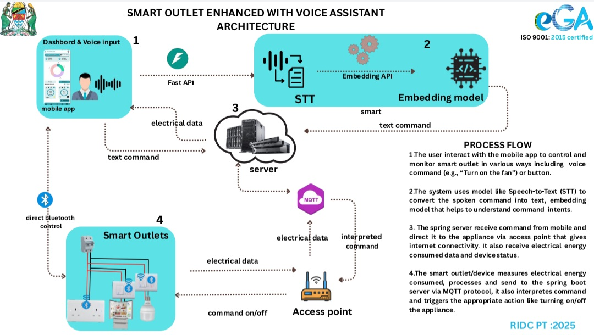

BSc Computer Systems & Networks student at Ardhi University. I build APIs, pipelines, and interfaces — and I've wired the physical layer too, from RJ-45 terminations to embedded IoT.
Four ports, four systems — spanning backend APIs, a data pipeline, a role-based frontend, and hands-on field work in IoT and networking.
Authentication service with JWT, Google OAuth, and a full CI/CD pipeline
A Node.js/Express REST API handling authentication end to end: JWT-based sessions alongside Google OAuth, backed by PostgreSQL. The service is containerized with Docker and ships through a GitHub Actions pipeline that runs the Jest/Supertest suite before deploy. Deployed and live on Render.
Role-based task management, from user dashboard to admin panel
A Next.js and Tailwind CSS frontend built on top of auth-api, with an AuthContext managing session state across the app. Role-based access control separates the admin and user experience across four pages, including a dashboard and a dedicated admin panel. Deployed on Vercel.
An ETL pipeline turning raw transactions into a live dashboard
A Python ETL pipeline using pandas and SQLAlchemy to clean and load fintech transaction data, scheduled to run automatically through GitHub Actions. The processed data feeds a Metabase dashboard, with SQL window functions and CTEs used to answer real analytical questions over the schema. Built with a Selcom Data Engineer role in mind.
IoT, AI, and networking in the field, built at e-GA's Research & ICT Development Centre
Six weeks embedded at e-GA's RIDC in Dodoma, working on the physical and applied side of computer systems. The core assignment was a Smart Outlet: an IoT-enabled power outlet with voice control and AI-driven usage prediction. I designed the interface in Figma, built the companion Android app, converted voice commands with speech-to-text matched via embedding similarity, and used MQTT to talk to an embedded IoT module built by e-GA — a microcontroller and sensors wired directly into the outlet. On top of the hardware, an AI layer predicted future electricity consumption to help cut waste.

Alongside that, I took part in an IoT hackathon focused on a fingerprint attendance device that was functional but physically exposed, with its circuit board and wiring unprotected. The task was to design and print a new enclosure to fix that. I modeled the casing in FreeCAD, OpenSCAD, Blender, and Fusion 360, working from the device's real dimensions so the fingerprint sensor, ports, and mounting points all lined up correctly. Once the model was ready, I prepared it for printing using PrusaSlicer, which converts the 3D design into G-code — the layer-by-layer instructions a 3D printer follows — and printed it on a Prusa 3D printer. The finished enclosure fully covered the internal electronics, included a wall-mount fitting so the device could be installed like a real access-control unit, and gave the device a durable, tamper-resistant shell suitable for actual deployment rather than just a lab prototype.
Separately, I trained on RJ-45 Ethernet termination: arranging the cable pairs in the correct colour order, crimping them into RJ-45 connectors, and testing each cable with a cable tester before it went into service — the same process used to wire real network infrastructure. I also visited both e-GA's headquarters and the National Assembly (Bunge) to see how ICT systems support day-to-day government operations and policy-making directly.
Grouped by where I've actually used them — across shipped code, live infrastructure, and field hardware.